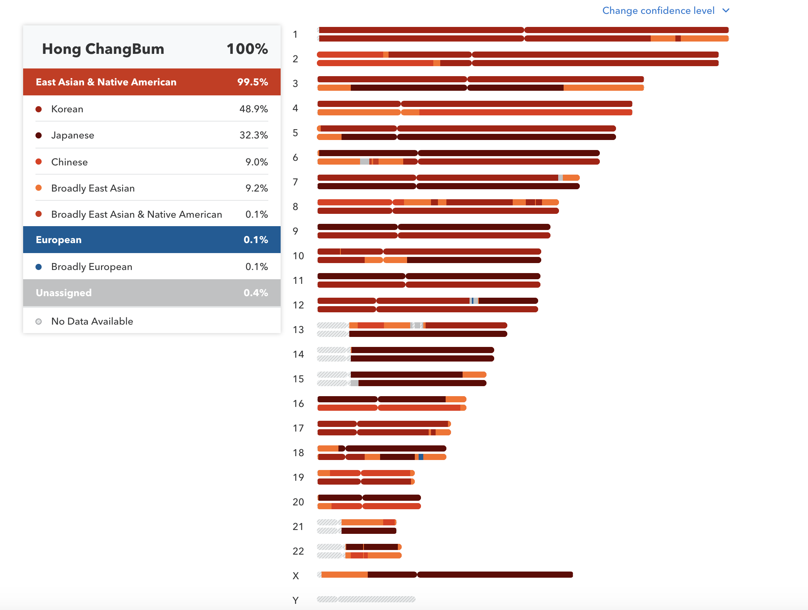

조상 정보 찾기¶
이전장에서는 유전적 특성을 PCA를 통해 분석하고 나의 유전적 위치를 표시하는 방법에 대해서 알아보았다. 이번에는 좀 더 세밀하게 나의 유전체 정보를 분석해 보도록 하겠다.
23andMe의 결과를 보면 필자의 염색체 3번의 대부분의 영역이 일본인으로 나온다. 과연 어떻게 된 일일까? 나의 머나먼 조상 중에 일본인이 있었을 가능성과 나의 조상 중에 일본으로 건너간 사람이 존재할 가능성이다. 하지만 한가지 더 생각해 봐야 할 것은 한국인의 데이터가 부족해서 생기는 결과에 대한 부분이다.
{kind=link}
기본적으로 나의 유전체 정보를 일정 영역으로 구분하고 해당 정보가 한국인 그룹, 일본인 그룹, 중국인 그룹, 유럽인 그룹 등과 얼마나 유사 한지를 비교하여 해당 영역이 가장 유사한 그룹을 색상으로 표시한 것이다.
일본인과 유사하다고 나온 부분이 한국인 모집단에도 존재한다면 3번 염색체는 모두 한국인으로 표시 될 수도 있다. 하지만 23andMe의 한국인 모집단은 50명도 채 안되기 때문에 이러한 현상이 나왔을 수도 있다. 이렇듯 자세한 조상 정보는 분석에 사용하는 모집단의 수나 분석 방법에 따라서 다른 결과를 보여줄 수도 있다는 것을 염두에 두어야 할 것이다.
Note
- 이번 장을 끝마치면 당신은 아래의 3가지에 대해서 배울 수 있다.
- 자신의 지노타입 정보를 부/모에게 각각 물려 받은 정보로 구분하는 페이징 방법
- SVM을 이용하여 유전체 정보를 분류하는 방법
- 염색체별로 유전체 정보를 시각화 하는 방법
페이징¶
지노타입 데이터가 ‘AG’라고 할 경우 과연 나는 엄마로부터 A를 받았는지 G를 받았는지를 가려낼 수 있을까? 단순히 자신의 지노타입 데이터만 존재하는 경우 아마 어려운 문제가 될 것이다. 하지만 부모의 지노타입을 알고 있는 경우에는 비교적 쉽게 알 수 있다. 아버지가 “AG” 어머니도 “AG”라고 할 경우에는 나의 A는 어머니의 A인지 아버지의 A인지 구분하기가 어렵게 된다. 이렇게 한쌍의 데이터를 서로 다른 두개의 데이터로 분리하는 작업을 페이징(phasing)이라고 한다.
유전체의 각 부위는 아무렇게나 자식에게 전달되는 것이 아니라 서로 연관되어 하나의 블록 단위로 자식에게 전달된다. 이러한 블록을 하플로타입(haplotype)이라고 하며 일반적으로 집단의 구성원들은 동일한 하플로타입의 패턴을 공유하고하고 있다. 따라서 이러한 하플로타입간의 유사성을 비교하여 각 개인의 유전적인 근원을 이해하는데 사용될 수 있다.
위의 그림에서도 보듯이 개인의 지노타입 정보를 페이징을 통해서 구분하게 된다. 각 염색체가 2개로 표현된 것은 이렇게 페이징을 통해 구분한 결과를 보여주는 것이다. 일본인이 나온 3번 염색체의 경우 페이징된 2개에서 모두 나온 것이 아니라 1개에서만 일본인의 정보가 확인된 것을 볼 수 있다. 지노타이핑을 통해 얻은 정보가 다음과 같다면, 추측 가능한 페이징 정보는 아래와 같다.
실제 아빠로부터: A-T-C
실제 엄마로부터: G-T-A
나의 지노타입: A/G T/T A/C
추측 가능한 정보
A-T-A
G-T-C
애드믹스처¶
모든 DNA가 전세계의 한지역에서만 나온 것이라면 당신이 어디에서 왔는지 쉽고 정확하게 알아낼 수 있다. 하지만 대부분의 사람들은 모든 조상이 한곳에서 나온 것이 아니라 어떤 사람은 조상이 여러 위치 또는 인종이 뒤섞여 있을 수 있다. 원래 유전적으로 분리가 되어 있단 집단이 서로 섞이는 경우에 이러한 것은 애드믹스처(admixture)라고 한다. 일반적으로 라틴계는 아메리카 인디언, 유럽 및 아프리카인의 DNA가 애드믹스처 되어 있다.
그렇다면 이렇게 페이징 정보도 알 수 없고 애드믹스처 된 개인의 유전체로부터 자신의 조상 정보를 추측할 수 있을까? 충분한 각인종의 데이터셋을 준비하고 지노타입 정보로부터 페이징된 하플로타입을 추정하고 염색체의 특정 윈도우 사이즈로 나눈 후 각 윈도우별로 인종 데이터셋과 비교하여 조상을 찾는 과정을 수행한다.
인종별 데이터셋과 페이징¶
HGDP(Human Genome Diveristy Project), HapMap, 1000 Genomes project의 데이터셋은 인구집단 정보와 함께 지노타입 데이터를 제공하고 있다. 따라서 우리의 조상 정보는 위의 모집단 데이터셋에 의존한 데이터이다.
인종 데이터를 사용하려면 인종마다 페이징된 지노타입 데이터를 사용해야 한다. 페이징 데이터를 제공하지 않는 경우 페이징 정보를 추정하여야 하며 나의 지노타입 데이터 역시 페이징 데이터를 추정해서 사용해야 한다. 페이징을 하는 방법은 실제 부모 데이터를 수행하는 방법은 현실적으로 어려움이 따르기 때문에 많은 통계적인 기법들을 구현한 프로그램을 사용한다.
가장 널리 사용되는 프로그램 중 하나는 비글(BEAGLE)이라는 프로그램이 사용되며, 23andMe는 비글과 동일한 알고리즘을 사용하는 핀치(Finch)라는 프로그램을 자체적으로 사용하고 있다.
Note
핀치새는 다윈의 진화론의 상징으로 갈라파고스섬에 살고 있는 핀치새는 먹이와 환경에 따라서 부리 모양이 다르며 최근 최근 연구에 따르면 ‘ALX1’ 유전자가 변형에 따른 것이라고 한다. 이 유전자는 머리 구조를 결정하는 역할을 하며 심하게 변형될 경우 유전병을 일으키는 것으로 알려져 있다.
여기서는 페이징된 지노타입을 사용하여 추정하지 않겠다. 페이징된 지노타입을 사용하게 되면 페이징 정보를 통해 1쌍의 염색체를 각각 분리하여 조상에 대한 정보를 획득할 수 있다. 또 다른 방법은 페이징을 수행하지 않고 지노타입 정보를 모두 사용할 수 있다.
마커1의 지노타입 AA(A)
마커2의 지노타입 TG(T)
마커3의 지노타입 GT(T)
마커4의 지노타입 TT(A)
페이징 수행시 2개의 데이터를 각각 사용
A->1
G->2
C->3
T->4
A-T-G-T -> [1,4,2,4]
A-G-T-T -> [1,2,4,4]
페이징 미수행시 1개의 데이터를 사용
Alternative Homo -> 1
Hetero -> 0.5
Reference Homo -> 0
[0, 0.5, 0.5, 1]
인구집단 추정¶
지노타입이 어떠한 레퍼런스 인종과 가장 근접하는지는 지지벡터머신(Support Vector Machine, SVM)을 이용하여 분류한다. 지지벡터머신은 지지벡터(support-vector)를 찾아 이들을 이용해서 구분선을 찾는 알고리즘으로 고차원의 데이터 세트에 잘 작동하며 복잡한 데이터 세트를 다룬 문제들에 자주 적용된다.
우리는 3개의 레퍼런스 인종에 대해서 학습을 수행한다. 우리가 사용하는 1000 Genomes Project 데이터는 총 179샘플로 YRI 59명, CEU 60명, CHB+JPT 60명으로 총 762개의 마커(총 1,000개중 데이터가 존재하지 않는 마커 제거)로 구성되어 있다.
첫 번째 리스트는 범주(인종 정보)를 담고 두 번째 리스트는 지노타입 정보를 각각 만든다. 범주는 179명의 샘플을 각각의 인종에 따라서 1, 2, 3의 3가지 범주를 담는다.
pop_category=[]
for i in range(179):
if 0<= i <= 59:
#YRI
pop_category.append(1)
elif 59 < i <= 119:
#CEU
pop_category.append(2)
elif 119 < i <= 179:
#CHB+JPT
pop_category.append(3)
print(pop_category)
[1, 1, 1, 1, 1, 1, 1, 1, 1, 1, 1, 1, 1, 1, 1, 1, 1, 1, 1, 1, 1, 1, 1, 1, 1, 1, 1, 1, 1, 1, 1, 1, 1, 1, 1, 1, 1, 1, 1, 1, 1, 1, 1, 1, 1, 1, 1, 1, 1, 1, 1, 1, 1, 1, 1, 1, 1, 1, 1, 1, 2, 2, 2, 2, 2, 2, 2, 2, 2, 2, 2, 2, 2, 2, 2, 2, 2, 2, 2, 2, 2, 2, 2, 2, 2, 2, 2, 2, 2, 2, 2, 2, 2, 2, 2, 2, 2, 2, 2, 2, 2, 2, 2, 2, 2, 2, 2, 2, 2, 2, 2, 2, 2, 2, 2, 2, 2, 2, 2, 2, 3, 3, 3, 3, 3, 3, 3, 3, 3, 3, 3, 3, 3, 3, 3, 3, 3, 3, 3, 3, 3, 3, 3, 3, 3, 3, 3, 3, 3, 3, 3, 3, 3, 3, 3, 3, 3, 3, 3, 3, 3, 3, 3, 3, 3, 3, 3, 3, 3, 3, 3, 3, 3, 3, 3, 3, 3, 3, 3]
179명의 샘플에 대한 지노타입 정보를 리스트에 담는다. 첫 번째 샘플의 762개 마커에 대한 지노타입 정보를 출력해 본다.
train_data=genotypes_only.apply(lambda x: x.tolist(), axis=1)
list_td=train_data.values.tolist()
print(list_td[0])
[0.5, 0.0, 0.5, 0.5, 1.0, … 0.0, 0.0, 1.0, 0.5]
179명의 762개 마커에 대한 데이터 세트가 만들어졌으니 SVM을 이용하여 이 모델을 학습시킨다.
마지막으로 새로운 범주 즉 나의 지노타입 데이터가 어느 범주에 속하는지 예측을 해 본다. 나의 지노타입 정보를 기반으로 예측한 결과 3번 즉 CHB+JPT 범주에 속하는 것을 확인 할 수 있다.
print(model.predict(anon_genotypes))
[3]
지금은 윈도우 사이즈에 상관없이 총 762개의 마커만을 사용했지만 적당히 윈도우에 해당하는 마커만으로 각 윈도우별로 인종을 예측하면 된다.
염색체 구간 설정¶
각 염색체를 일정한 윈도우 사이즈로 나눈다. 특별히 정해진 윈도우 사이즈는 없지만 23andMe 데이터의 경우 보통 염색체당 5,000~4,000개의 마커가 존재하기 때문에 마커 100개를 윈도우 사이즈로 지정하면 염색체의 길이 마다 다르겠지만 50~400개의 윈도우가 만들어진다.
우선 염색체별로 길이를 알아내기 위해서 표준 레퍼런스에서 제공하는 염색체 길이 데이터를 다운로드 한다. bedtools의 makewindows 명령어를 이용하여 600,000 bp의 길이로 각 염색체를 나누고 이를 bins 파일에 저장한다. 여기서는 모든 염색체에 대해서 실행하는 경우 시간이 많이 소요되므로 18번 염색체만을 대상으로 진행한다.
$ wget http://hgdownload.soe.ucsc.edu/goldenPath/hg19/bigZips/hg19.chrom.sizes
$ bedtools makewindows -g hg19.chrom.sizes -w 600000 > bins
$ cat bins | grep –P “chr18\t” > chr18.bins
$ cat chr18.bins
chr18 0 600000
chr18 600000 1200000
chr18 1200000 1800000
chr18 1800000 2400000
chr18 2400000 3000000
chr18 3000000 3600000
chr18 3600000 4200000
18번 염색체의 bin 사이즈별 시작 위치와 끝 위치를 데이터프레임에 저장한다.
chr_18_bins = pd.read_table("chr18.bins", sep = "\t", comment = "#", header = None)
chr_18_bins.columns=['chrom','start','end']
23andMe 데이터 읽기¶
23andMe 데이터를 읽어 지노타입 데이터를 vcf 형태의 지노타입으로 변경한다. 이때 앞서 언급한바와 같이 18번 염색체만을 선택한다. 만일 이 부분을 제외하고 전체 염색체를 대상으로 진행하게 되면 시간이 좀 걸리게 된다.
import pandas as pd
anon = pd.read_table("genome_Hong_ChangBum_Full_20100816082459.txt", sep = "\t", comment = "#", header = None)
anon=anon[anon['chrom'] == 18]
import tabix
YRI_file = "YRI.low_coverage.2010_09.genotypes.vcf.gz"
yri = tabix.open(YRI_file)
def convert_anon_genotype(chrom, pos, genotype, vcf_tabix):
if chrom=="MT" or chrom=="Y" or chrom=="X":
return None
site = vcf_tabix.query(chrom, pos - 1, pos)
try:
row = site.next()
except StopIteration:
return None
ref = row[3]
alt = row[4]
#print("%s%s"%(ref,alt))
#print("%s"%(genotype))
#print("=======")
if genotype == ref.strip()+ref.strip():
return("0|0")
elif (genotype == ref+alt) | (genotype == alt+ref):
return("0|1")
elif genotype == alt+alt:
return("1|1")
else: # missing genotype, or incorrect annotation, we assume ref/ref
return("0|0")
genotypes_1kg_format = []
for chrom, pos, genotype in zip(anon['chrom'], anon['pos'], anon['genotype']):
genotypes_1kg_format.append(convert_anon_genotype(str(chrom), pos, genotype, yri))
anon['genotype_1kg_format'] = genotypes_1kg_format
1000 Genomes Project에 23andMe의 데이터가 존재하는 것들은 제거한다.
anon=anon.loc[anon['genotype_1kg_format'].notnull()]
인종별 데이터 읽기¶
YRI 인구집단의 지노타입 데이터를 읽어 들인다.
def extract_genotype(chrom, pos, vcf_tabix):
site = vcf_tabix.query(chrom, pos - 1, pos)
try:
g = site.next()[9:]
except StopIteration:
return None # put None in the dataframe if we are missing this genotype in 1000 Genomes
g = [i.split(":")[0] for i in g] # if present in 1000 genomes, get the genotypes
return(g)
for rsid, chrom, pos in zip(anon['rsid'], anon['chrom'], anon['pos']):
g = extract_genotype(str(chrom), pos, yri)
yri_genotypes[rsid] = g
CEU와 CHBJPT 인구집단의 샘플 목록을 작성한다.
CEU_file = "CEU.low_coverage.2010_09.genotypes.vcf.gz"
ceu = tabix.open(CEU_file)
number_ceu_samples = len(ceu.query("1", 742428, 742429).next()[9:])
ceu_genotypes = pd.DataFrame({"sample": ["CEU" + str(i) for i in range(1, number_ceu_samples + 1)], "population": "CEU"})
CHBJPT_file = "CHBJPT.low_coverage.2010_09.genotypes.vcf.gz"
chbjpt = tabix.open(CHBJPT_file)
number_chbjpt_samples = len(chbjpt.query("1", 742428, 742429).next()[9:])
chbjpt_genotypes = pd.DataFrame({"sample": ["CHBJPT" + str(i) for i in range(1, number_chbjpt_samples + 1)], "population": "CHBJPT"})
CEU와 CHBJPT 인구집단의 지노타입 데이터를 읽어 들인다.
for rsid, chrom, pos in zip(anon['rsid'], anon['chrom'], anon['pos']):
ceu_genotypes[rsid] = extract_genotype(str(chrom), pos, ceu)
chbjpt_genotypes[rsid] = extract_genotype(str(chrom), pos, chbjpt)
3개 인구집단의 지노타입 데이터를 genotype 데이터프레임에 합친다.
genotypes = yri_genotypes.copy()
genotypes = genotypes.append(ceu_genotypes, ignore_index=True)
genotypes = genotypes.append(chbjpt_genotypes, ignore_index=True)
print("Now the genotypes data frame has {} samples and {} genotypes").format(genotypes.shape[0], genotypes.shape[1]-2)
Now the genotypes data frame has 179 samples and 16962 genotypes
지노타입 데이터를 0, 0.5, 1로 변환한다.
genotypes_only = genotypes.copy().iloc[:, 2:]
genotypes_only[genotypes_only == "1|1"] = 1
genotypes_only[genotypes_only == "0|1"] = 0.5
genotypes_only[genotypes_only == "0/1"] = 0.5
genotypes_only[genotypes_only == "1|0"] = 0.5
genotypes_only[genotypes_only == "0|0"] = 0.0
인구집단 정보에 대한 리스트를 생성한다.
category_only = genotypes.copy().iloc[:, :1]
category_only[category_only == "YRI"] = 1
category_only[category_only == "CEU"] = 2
category_only[category_only == "CHBJPT"] =3
pop_cat=list(category_only.values.flatten())
트레이닝 데이터 세트 만들기¶
인구집단별 트레이닝 데이터 세트를 작성한다.
def extract_genotypes(chrom, start, end, vcf_tabix):
g=[]
p=[]
records = vcf_tabix.query(chrom, start, end)
for record in records:
try:
a=record[9:]
b=record[2:3]
b="".join(b)
except StopIteration:
return None
if b in snplist:
g.append([i.split(":")[0] for i in a])
p.append(b)
return g,p
def bin_chr(chrom, start, end):
#YRI
g,p = extract_genotypes(str(chrom).replace('chr',''), start, end, yri)
df = pd.DataFrame.from_records(g)
df[df == "1|1"] = 1
df[df == "0|1"] = 0.5
df[df == "1|0"] = 0.5
df[df == "1/0"] = 0.5
df[df == "0/1"] = 0.5
df[df == "0|0"] = 0.5
df=df.T
df.columns=p
#23andme
a=df.columns.tolist()
my_data=anon.loc[anon['rsid'].isin(a)]
my_data=my_data[['genotype_1kg_format']]
genotypes_only=my_data.T
genotypes_only[genotypes_only == "1|1"] = 1
genotypes_only[genotypes_only == "0|1"] = 0.5
genotypes_only[genotypes_only == "0/1"] = 0.5
genotypes_only[genotypes_only == "1|0"] = 0.5
genotypes_only[genotypes_only == "0|0"] = 0.0
my_gene=genotypes_only[0:].values.tolist()[0]
#CEU
g,p = extract_genotypes(str(chrom).replace('chr',''), start, end, ceu)
df_ceu = pd.DataFrame.from_records(g)
df_ceu[df_ceu == "1|1"] = 1
df_ceu[df_ceu == "0|1"] = 0.5
df_ceu[df_ceu == "1|0"] = 0.5
df_ceu[df_ceu == "1/0"] = 0.5
df_ceu[df_ceu == "0/1"] = 0.5
df_ceu[df_ceu == "0|0"] = 0.5
df_ceu=df_ceu.T
df_ceu.columns=p
#CHBJPT
g,p = extract_genotypes(str(chrom).replace('chr',''), start, end, chbjpt)
df_chbjpt = pd.DataFrame.from_records(g)
df_chbjpt[df_chbjpt == "1|1"] = 1
df_chbjpt[df_chbjpt == "0|1"] = 0.5
df_chbjpt[df_chbjpt == "1|0"] = 0.5
df_chbjpt[df_chbjpt == "1/0"] = 0.5
df_chbjpt[df_chbjpt == "0/1"] = 0.5
df_chbjpt[df_chbjpt == "0|0"] = 0.5
df_chbjpt=df_chbjpt.T
df_chbjpt.columns=p
merged_pd=pd.concat([df,df_ceu,df_chbjpt])
merged_pd=merged_pd.dropna(axis=1)
t_data=merged_pd.apply(lambda x:x.tolist(),axis=1)
list_train=t_data.values.tolist()
j=[]
for i in range(179):
if 0<= i <= 59:
j.append(1)
elif 59 < i <= 119:
j.append(2)
elif 119 < i <= 179:
j.append(3)
if not list_train:
return None
from sklearn.svm import SVC
model = SVC().fit(list_train, j)
print("%s %s %s"%(chrom, start, end))
prediction_ancestry=model.predict(my_gene)
print(prediction_ancestry[0])
if prediction_ancestry[0] == 1:
return 'yri'
elif prediction_ancestry[0] == 2:
return 'ceu'
elif prediction_ancestry[0] == 3:
return 'chbjpt'
염색체번호와 위치를 입력하면 해당 영역에 대한 인구집단 SVM 결과를 반환한다.
p=bin_chr('chr18', 62400000, 63000000)
print(p)
chr18 62400000 63000000
2
ceu
염색체의 bin 구간별로 bin_chr 함수를 실행한다.
prediction=[]
chr_18_bins[:5]['end']):
for chrom, start, end in zip(chr_18_bins['chrom'], chr_18_bins['start'], chr_18_bins['end']):
p=bin_chr(chrom, start, end)
prediction.append([chrom,start,end,p])
print(prediction)
[['chr18', 0, 600000, 'chbjpt'], ['chr18', 600000, 1200000, 'chbjpt'], ['chr18', 1200000, 1800000, 'chbjpt'], ['chr18', 1800000, 2400000, 'chbjpt'], ['chr18', 2400000, 3000000, 'chbjpt'], ['chr18', 3000000, 3600000, 'chbjpt'], ['chr18', 3600000, 4200000, 'ceu'], ['chr18', 4200000, 4800000, 'chbjpt'], ['chr18', 4800000, 5400000, 'chbjpt'], ['chr18', 5400000, 6000000, 'chbjpt'], ['chr18', 6000000, 6600000, 'chbjpt'], ['chr18', 6600000, 7200000, 'chbjpt'], ['chr18', 7200000, 7800000, 'chbjpt'], ['chr18', 7800000, 8400000, 'chbjpt'], ['chr18', 8400000, 9000000, 'ceu'], ['chr18', 9000000, 9600000, 'yri'], ['chr18', 9600000, 10200000, 'chbjpt'], ['chr18', 10200000, 10800000, 'chbjpt'], ['chr18', 10800000, 11400000, 'chbjpt'], ['chr18', 11400000, 12000000, 'chbjpt'], ['chr18', 12000000, 12600000, 'chbjpt'], ['chr18', 12600000, 13200000, 'yri'], ['chr18', 13200000, 13800000, 'chbjpt'], ['chr18', 13800000, 14400000, 'chbjpt'], ['chr18', 14400000, 15000000, 'chbjpt'], ['chr18', 15000000, 15600000, 'ceu'], ['chr18', 15600000, 16200000, None], ['chr18', 16200000, 16800000, None], ['chr18', 16800000, 17400000, 'ceu'], ['chr18', 17400000, 18000000, 'ceu'], ['chr18', 18000000, 18600000, 'chbjpt'], ['chr18', 18600000, 19200000, 'yri'], ['chr18', 19200000, 19800000, 'chbjpt'], ['chr18', 19800000, 20400000, 'chbjpt'], ['chr18', 20400000, 21000000, 'chbjpt'], ['chr18', 21000000, 21600000, 'chbjpt'], ['chr18', 21600000, 22200000, 'chbjpt'], ['chr18', 22200000, 22800000, 'chbjpt'], ['chr18', 22800000, 23400000, 'ceu'], ['chr18', 23400000, 24000000, 'chbjpt'], ['chr18', 24000000, 24600000, 'chbjpt'], ['chr18', 24600000, 25200000, 'chbjpt'], ['chr18', 25200000, 25800000, 'chbjpt'], ['chr18', 25800000, 26400000, 'chbjpt'], ['chr18', 26400000, 27000000, 'chbjpt'], ['chr18', 27000000, 27600000, 'chbjpt'], ['chr18', 27600000, 28200000, 'chbjpt'], ['chr18', 28200000, 28800000, 'chbjpt'], ['chr18', 28800000, 29400000, 'chbjpt'], ['chr18', 29400000, 30000000, 'chbjpt'], ['chr18', 30000000, 30600000, 'chbjpt'], ['chr18', 30600000, 31200000, 'chbjpt'], ['chr18', 31200000, 31800000, 'chbjpt'], ['chr18', 31800000, 32400000, 'chbjpt'], ['chr18', 32400000, 33000000, 'yri'], ['chr18', 33000000, 33600000, 'chbjpt'], ['chr18', 33600000, 34200000, 'chbjpt'], ['chr18', 34200000, 34800000, 'yri'], ['chr18', 34800000, 35400000, 'yri'], ['chr18', 35400000, 36000000, 'yri'], ['chr18', 36000000, 36600000, 'chbjpt'], ['chr18', 36600000, 37200000, 'chbjpt'], ['chr18', 37200000, 37800000, 'chbjpt'], ['chr18', 37800000, 38400000, 'chbjpt'], ['chr18', 38400000, 39000000, 'chbjpt'], ['chr18', 39000000, 39600000, 'chbjpt'], ['chr18', 39600000, 40200000, 'chbjpt'], ['chr18', 40200000, 40800000, 'ceu'], ['chr18', 40800000, 41400000, 'chbjpt'], ['chr18', 41400000, 42000000, 'chbjpt'], ['chr18', 42000000, 42600000, 'chbjpt'], ['chr18', 42600000, 43200000, 'chbjpt'], ['chr18', 43200000, 43800000, 'chbjpt'], ['chr18', 43800000, 44400000, 'chbjpt'], ['chr18', 44400000, 45000000, 'chbjpt'], ['chr18', 45000000, 45600000, 'chbjpt'], ['chr18', 45600000, 46200000, 'chbjpt'], ['chr18', 46200000, 46800000, 'chbjpt'], ['chr18', 46800000, 47400000, 'chbjpt'], ['chr18', 47400000, 48000000, 'chbjpt'], ['chr18', 48000000, 48600000, 'chbjpt'], ['chr18', 48600000, 49200000, 'chbjpt'], ['chr18', 49200000, 49800000, 'chbjpt'], ['chr18', 49800000, 50400000, 'chbjpt'], ['chr18', 50400000, 51000000, 'ceu'], ['chr18', 51000000, 51600000, 'chbjpt'], ['chr18', 51600000, 52200000, 'chbjpt'], ['chr18', 52200000, 52800000, 'chbjpt'], ['chr18', 52800000, 53400000, 'chbjpt'], ['chr18', 53400000, 54000000, 'chbjpt'], ['chr18', 54000000, 54600000, 'chbjpt'], ['chr18', 54600000, 55200000, 'chbjpt'], ['chr18', 55200000, 55800000, 'ceu'], ['chr18', 55800000, 56400000, 'chbjpt'], ['chr18', 56400000, 57000000, 'chbjpt'], ['chr18', 57000000, 57600000, 'chbjpt'], ['chr18', 57600000, 58200000, 'chbjpt'], ['chr18', 58200000, 58800000, 'chbjpt'], ['chr18', 58800000, 59400000, 'ceu'], ['chr18', 59400000, 60000000, 'chbjpt'], ['chr18', 60000000, 60600000, 'chbjpt'], ['chr18', 60600000, 61200000, 'chbjpt'], ['chr18', 61200000, 61800000, 'chbjpt'], ['chr18', 61800000, 62400000, 'ceu'], ['chr18', 62400000, 63000000, 'ceu'], ['chr18', 63000000, 63600000, 'ceu'], ['chr18', 63600000, 64200000, 'chbjpt'], ['chr18', 64200000, 64800000, 'chbjpt'], ['chr18', 64800000, 65400000, 'yri'], ['chr18', 65400000, 66000000, 'chbjpt'], ['chr18', 66000000, 66600000, 'yri'], ['chr18', 66600000, 67200000, 'chbjpt'], ['chr18', 67200000, 67800000, 'chbjpt'], ['chr18', 67800000, 68400000, 'chbjpt'], ['chr18', 68400000, 69000000, 'chbjpt'], ['chr18', 69000000, 69600000, 'chbjpt'], ['chr18', 69600000, 70200000, 'chbjpt'], ['chr18', 70200000, 70800000, 'chbjpt'], ['chr18', 70800000, 71400000, 'chbjpt'], ['chr18', 71400000, 72000000, 'chbjpt'], ['chr18', 72000000, 72600000, 'chbjpt'], ['chr18', 72600000, 73200000, 'chbjpt'], ['chr18', 73200000, 73800000, 'chbjpt'], ['chr18', 73800000, 74400000, 'chbjpt'], ['chr18', 74400000, 75000000, 'chbjpt'], ['chr18', 75000000, 75600000, 'chbjpt'], ['chr18', 75600000, 76200000, 'chbjpt'], ['chr18', 76200000, 76800000, None], ['chr18', 76800000, 77400000, None], ['chr18', 77400000, 78000000, None], ['chr18', 78000000, 78077248, None]]
결과로 반환된 리스트를 데이터프레임에 입력한다.
ideo=pd.DataFrame(prediction)
ideo.columns=['chrom','start','end','pop']
ideo['width'] = ideo.end - ideo.start
인구집단별 색상값도 추가한다.
pop_color={'yri':(0.3,1,0.4),'ceu':(1,1,0.3),"chbjpt":(0,0.7,0.5),None:(0.9,1,0.9)}
ideo['colors'] = ideo['pop'].apply(lambda x: pop_color[x])
print(ideo.head())
chrom start end pop width colors
0 chr18 0 600000 chbjpt 600000 (0, 0.7, 0.5)
1 chr18 600000 1200000 chbjpt 600000 (0, 0.7, 0.5)
2 chr18 1200000 1800000 chbjpt 600000 (0, 0.7, 0.5)
3 chr18 1800000 2400000 chbjpt 600000 (0, 0.7, 0.5)
4 chr18 2400000 3000000 chbjpt 600000 (0, 0.7, 0.5)
이디오그램 그리기¶
해당 데이터를 이디오그램으로 표시한다.
from matplotlib import pyplot as plt
from matplotlib.collections import BrokenBarHCollection
%matplotlib inline
def chromosome_collections(df, y_positions, height, **kwargs):
del_width = False
if 'width' not in df.columns:
del_width = True
df['width'] = df['end'] - df['start']
for chrom, group in df.groupby('chrom'):
print chrom
yrange = (y_positions[chrom], height)
xranges = group[['start', 'width']].values
yield BrokenBarHCollection(
xranges, yrange, facecolors=group['colors'], **kwargs)
if del_width:
del df['width']
fig = plt.figure(figsize=figsize)
ax = fig.add_subplot(111)
print("adding ideograms...")
for collection in chromosome_collections(ideo, chrom_ybase, chrom_height):
ax.add_collection(collection)
# Height of each ideogram
chrom_height = 1
# Spacing between consecutive ideograms
chrom_spacing = 1
# Height of the gene track. Should be smaller than `chrom_spacing` in order to
# fit correctly
gene_height = 0.4
# Padding between the top of a gene track and its corresponding ideogram
gene_padding = 0.1
# Width, height (in inches)
figsize = (15, 0.5)
# Decide which chromosomes to use
#chromosome_list = ['chr%s' % i for i in range(1, 23)]
chromosome_list=[18]
# Keep track of the y positions for ideograms and genes for each chromosome,
# and the center of each ideogram (which is where we'll put the ytick labels)
ybase = 0
chrom_ybase = {}
gene_ybase = {}
chrom_centers = {}
# Axes tweaking
ax.set_yticks([chrom_centers[i] for i in chromosome_list])
ax.set_yticklabels(chromosome_list)
ax.axis('tight')
plt.show()
{kind=link}